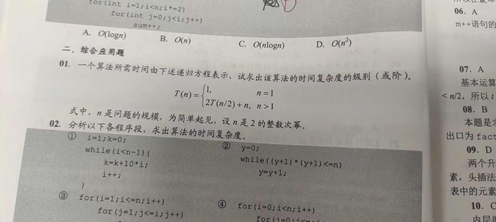
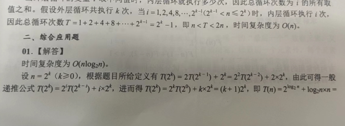
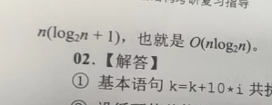
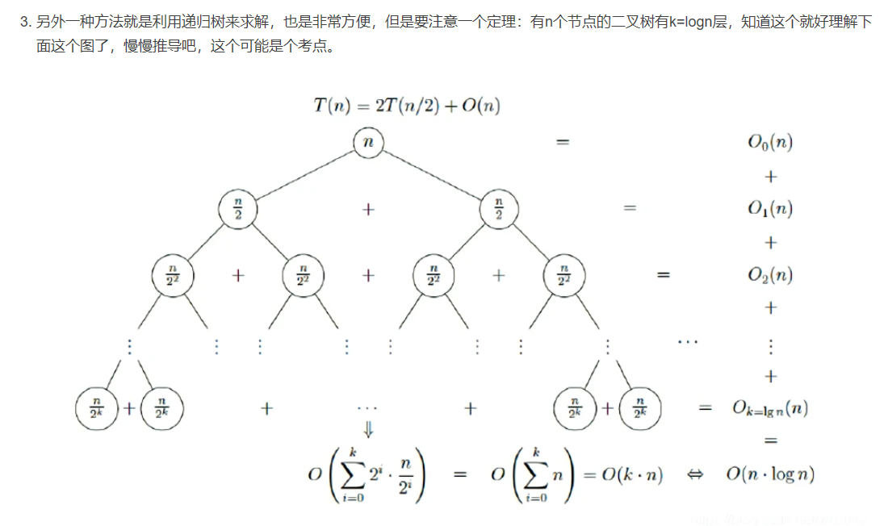
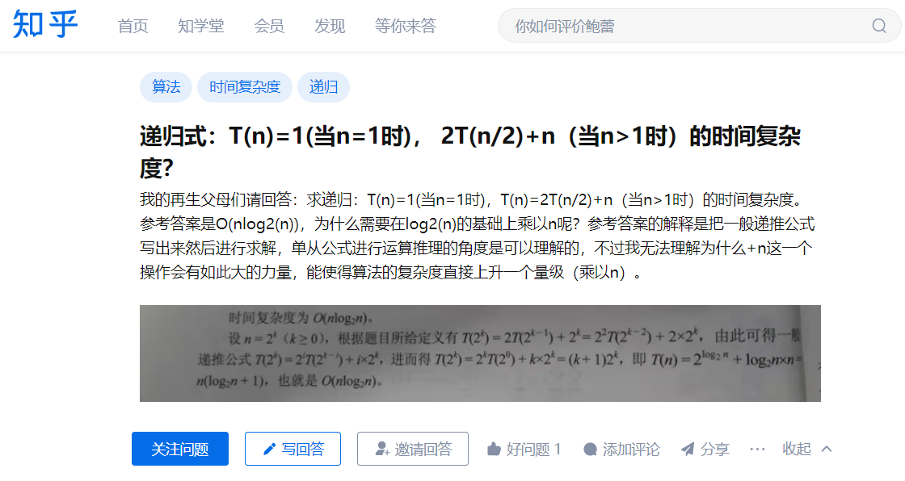
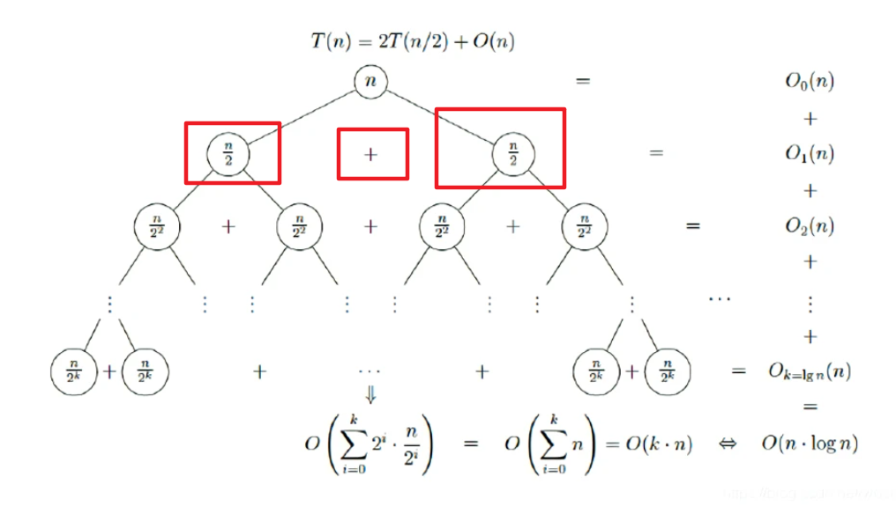
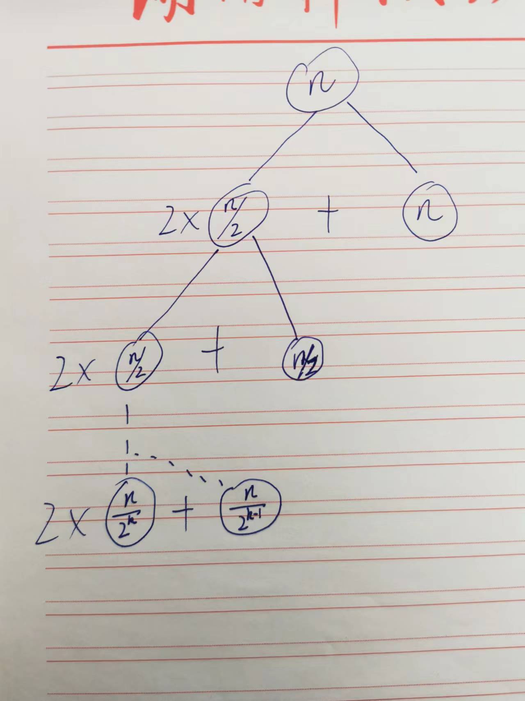
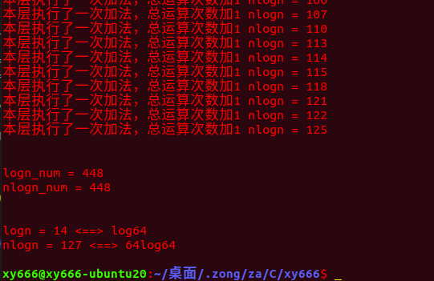

1
| C:\blog\source\_posts\关于-T-n-2T-n-2-n-的复杂度计算\
|
T(n)=2T(n/2)+n 的复杂度为 nlog(n)
昨天我的小伙伴问了我一道这样的题：

这是答案：


1
2
|
在我看来，就将64带入去算，按理来说计算量指数倍递减那么只需要大概 log2(64)=6 次计算就能得到结果，如果复杂度是nlogn那么按理来说要计算大概64*log2(64)=384次才能得出计算结果，而我完全想不懂这384次从哪来，我就理直气壮地和他说，“我打包票”，“答案是错的”，“出题老师水平不行”，“这题别管了”，”递归不懂多做点别的递归题“，“考研不会出现这种低级错误题”......叭叭一顿输出当晚后我就没管这个题了，我的小伙伴也没有再和我争论。
|
第二天：
1
| 因为感觉昨晚的话说得有点过激，又觉得我不过是一个大学生，难道我能想到的，经验丰富的出题人就想不到？于是就找了找相关的文章
|
于是就有了以下解答：
参考链接：T(n)=2T(n/2)+n的解为T(n)=O(nlogn)的求解_woshilsh的博客-CSDN博客

1
| 看了这个答案后我就开始怀疑人生了，难道真的是我错了？这个图我也挑不出毛病啊，然后我立马去向我的小伙伴认怂，“我是乡巴佬”，“昨天那题答案没错”，“你别被我带偏了”......可我没想到的是他的确没被我带偏，他就是认为答案是对的，还和我讲他的理解，然后我俩叭叭聊了一大堆，虽然他说的我基本都听不明白。
|
1
2
3
|
因为总感觉nlog(n)这个数量级真的太大了，而这题的计算量本来就是指数级递减的，然后我就感觉是不是国内普遍都认为这题答案就这样，所以我又翻墙去外网找答案，看看有没有懂一点的外国网友，虽然找到的还是中国人发的贴子，不过也让我找回了自信
参考链接：https://www.zhihu.com/question/521524809
|


于是我也有了我的递归树：

log2(n)层，每层两步运算，总的运算量为2log2(n)，复杂度级别为log2(n)
ok，一切都明了了，log2(n)与nlog2(n)这两个相差甚远的结果是因为递归的方式不同：
得出以下代码：
1
2
3
4
5
6
7
8
9
10
11
12
13
14
15
16
17
18
19
20
21
22
23
24
25
26
27
28
29
30
31
32
33
34
35
36
37
38
39
| #include<stdio.h>
int digui_logn(int t);
int digui_nlogn(int t);
int logn=0,nlogn=0,a,b,sum;
int main()
{
int logn_num,nlogn_num;
logn_num = digui_logn(64);
nlogn_num = digui_nlogn(64);
printf("\n\nlogn_num = %d\nnlogn_num = %d\n\n",logn_num,nlogn_num);
printf("\nlogn = %d <==> log64\nnlogn = %d <==> 64log64\n\n",logn,nlogn);
return 0;
}
int digui_logn(int t)
{
logn += 2;
if(t == 1){
return 1;
}
printf("本层执行了一次乘法和一次加法，总运算次数加2 logn = %d\n",logn);
return (2*digui_logn(t/2)+t);
}
int digui_nlogn(int t)
{
nlogn+=1;
if(t == 1){
return 1;
}
printf("本层执行了一次加法，总运算次数加1 nlogn = %d\n",nlogn);
return digui_nlogn(t/2)+digui_nlogn(t/2)+t;
}
|
结果:

分析：
感想：